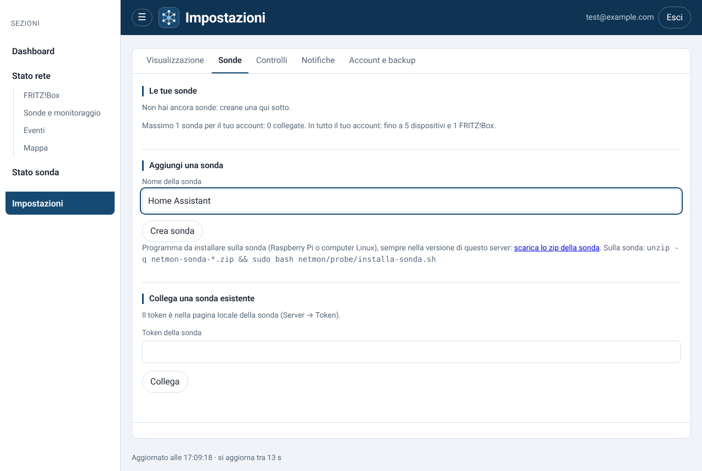
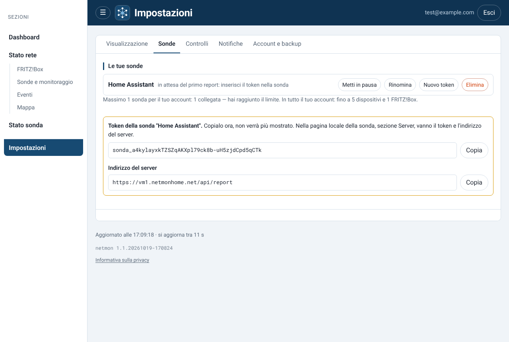
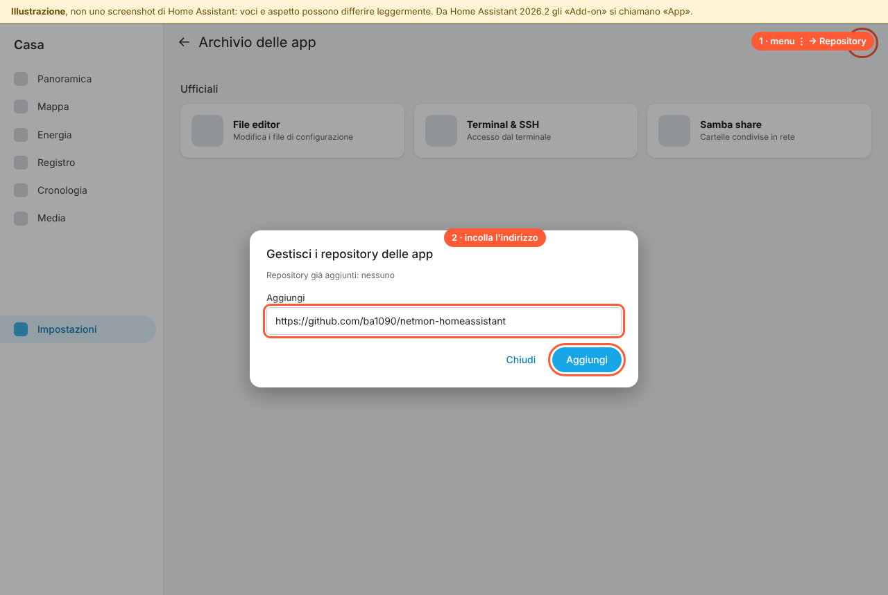
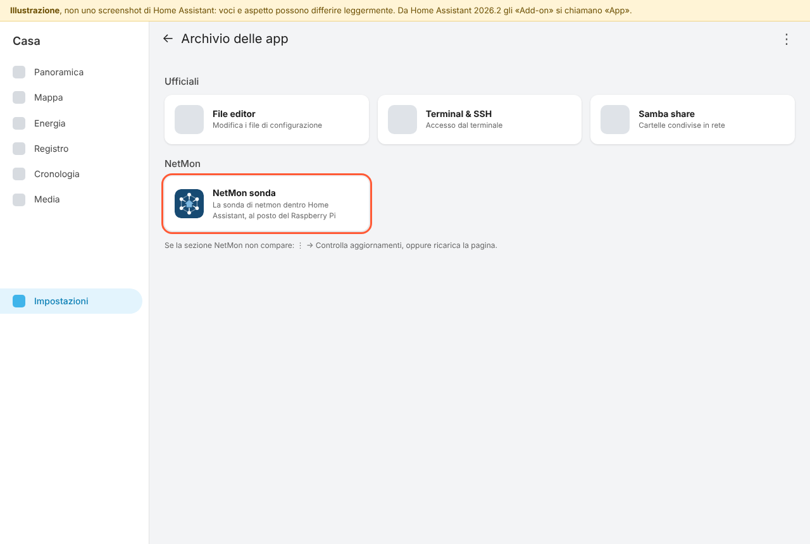
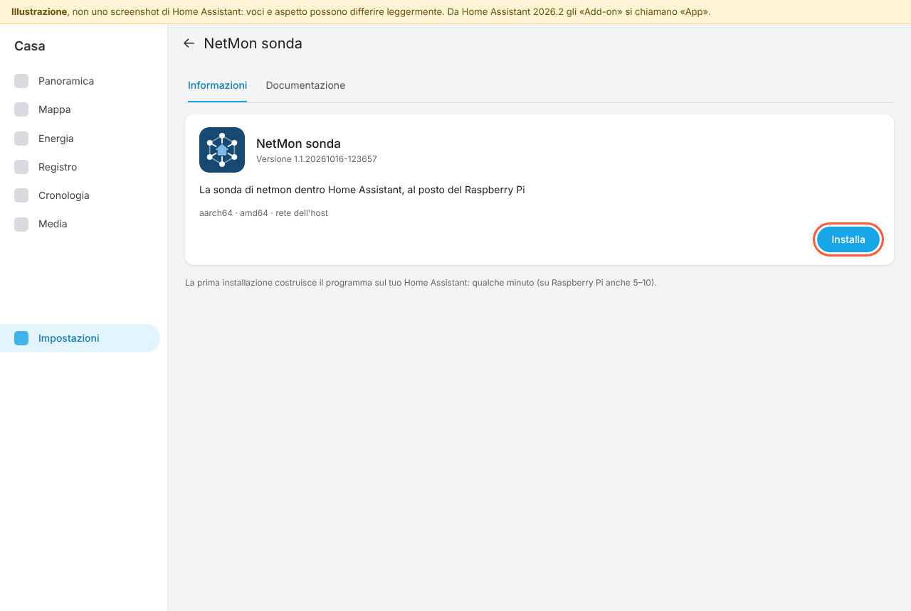
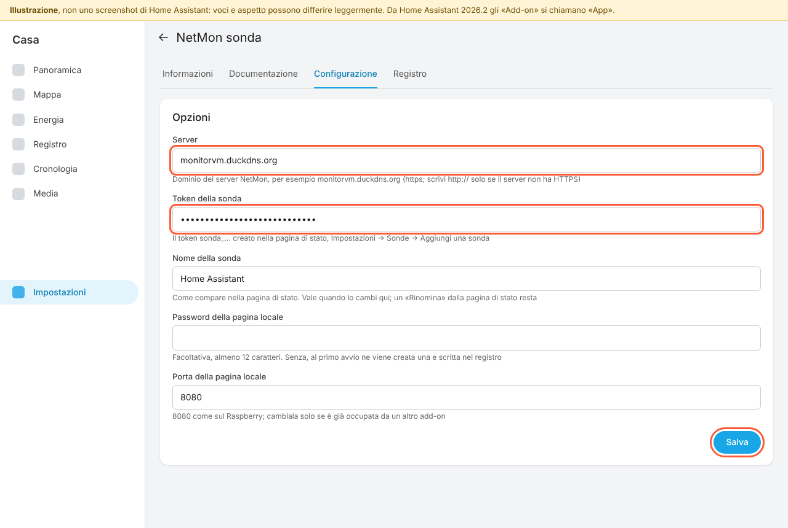
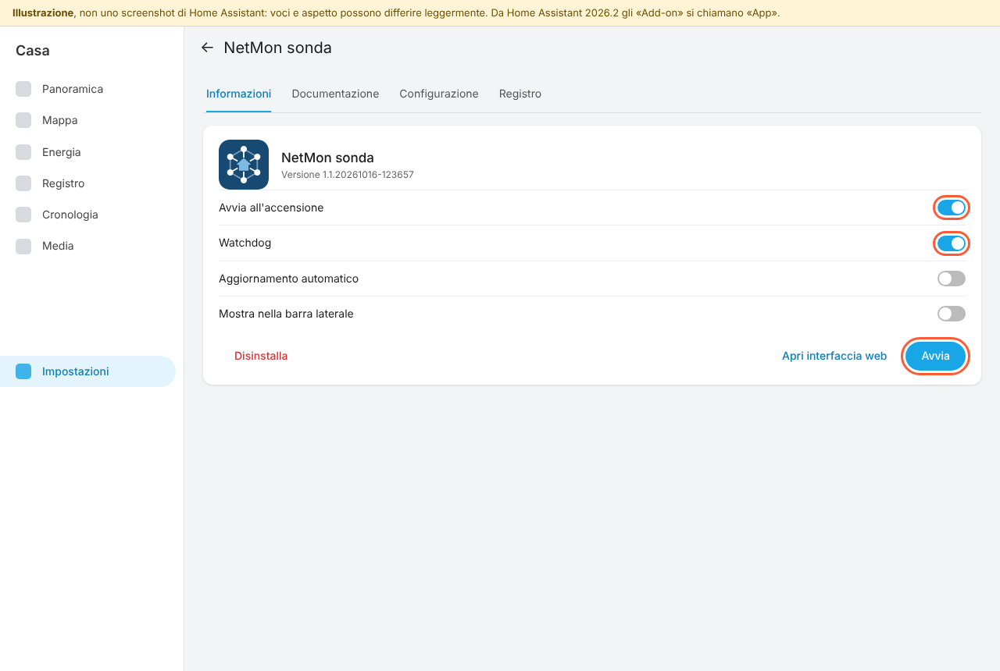
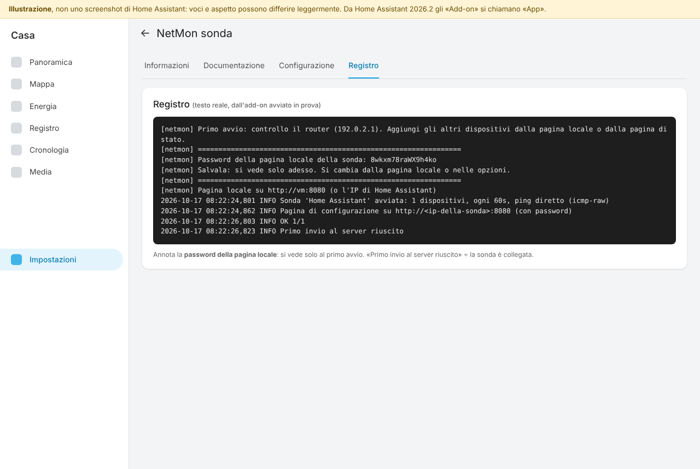
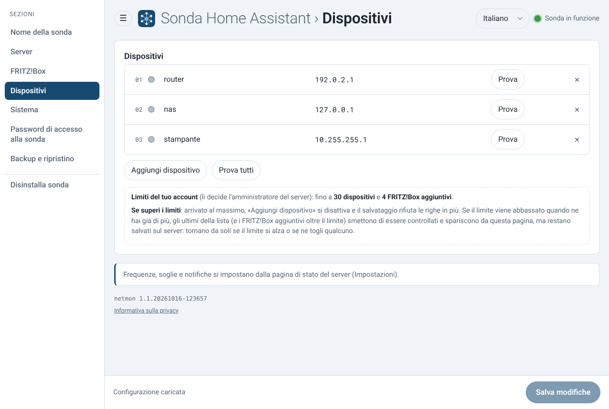
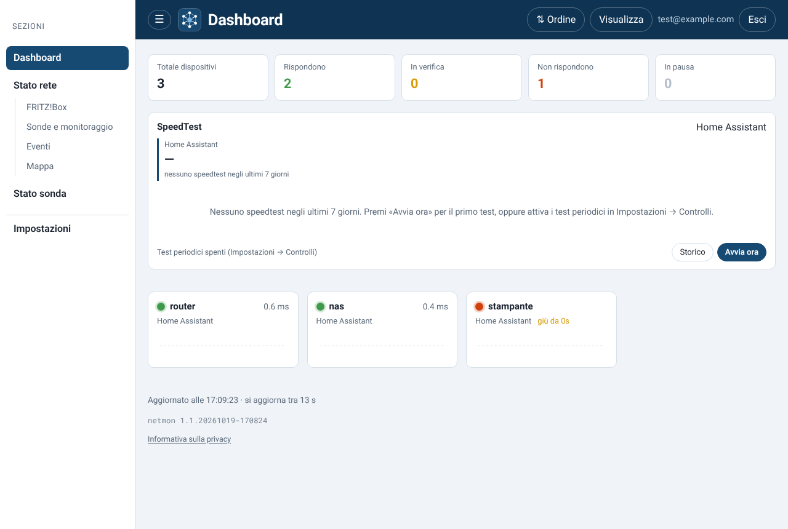

Guida passo passo, con le schermate · versione 1.1.20261019-170824
La sonda di NetMon gira dentro Home Assistant come app (add-on), al posto del Raspberry Pi: fa i ping ai dispositivi di casa, legge il FRITZ!Box, fa gli speedtest (anche periodici) e manda tutto al tuo server NetMon.
Repository: https://github.com/ba1090/netmon-homeassistant
| Dove | Cosa fai |
|---|---|
| Pagina di stato NetMon | crei la sonda e copi token e indirizzo del server (passi 1–2) |
| Home Assistant | aggiungi il repository, installi, configuri e avvii l'app NetMon sonda (passi 3–8) |
| Pagina di stato o pagina locale | aggiungi i dispositivi da controllare (passi 9–10) |
Dal browser apri la pagina di stato del tuo server NetMon (l'indirizzo è nell'email di invito, per esempio
https://vm1.netmonhome.net) e accedi. Vai in Impostazioni → Sonde, nel riquadro
Aggiungi una sonda scrivi un nome (per esempio Home Assistant) e premi Crea sonda.
Se è la tua prima sonda, la Dashboard ti propone anche la procedura guidata Collega la tua prima sonda: va bene lo stesso, fermati quando mostra il token. Quante sonde puoi collegare lo decide il piano del tuo account.

Compare il token, che comincia con sonda_. Premi Copia e tienilo da parte: si vede una volta
sola. Se lo perdi, dalla stessa pagina puoi generarne uno nuovo con Nuovo token.
Sotto c'è l'indirizzo del server (per esempio https://vm1.netmonhome.net/api/report): al passo 6
ti serve la parte in mezzo, il dominio, cioè vm1.netmonhome.net.

In Home Assistant vai in Impostazioni → App → Archivio delle app (pulsante in basso a destra). Apri il menu ⋮ in alto a destra → Repository, incolla l'indirizzo
e premi Aggiungi, poi Chiudi.

In fondo all'archivio compare la sezione NetMon con l'app NetMon sonda. Se non la vedi, ricarica la pagina oppure usa ⋮ → Controlla aggiornamenti. Aprila.

Premi Installa. La prima volta Home Assistant costruisce il programma sul tuo dispositivo: servono alcuni minuti, su un Raspberry Pi anche 5–10. Non chiudere la pagina finché non compaiono le schede Configurazione e Registro. Il numero di versione che vedi sarà quello più recente.

Apri la scheda Configurazione e compila:
https:// e senza
/api/report, per esempio vm1.netmonhome.net;Premi Salva.

Torna alla scheda Informazioni, attiva Avvia all'accensione e Watchdog (così la sonda riparte da sola dopo un riavvio o un blocco) e premi Avvia.

Apri la scheda Registro. Dopo qualche secondo trovi il riquadro «Password della pagina locale della sonda: …»: annotala, si vede solo al primo avvio. La riga «Primo invio al server riuscito» vuol dire che la sonda è collegata al server.

Al primo avvio la sonda controlla solo il router. Gli altri dispositivi si aggiungono in due modi:
http://homeassistant.local:8080, con la password del passo 8. Da qui si configura anche il
FRITZ!Box.Quanti dispositivi e FRITZ!Box puoi controllare lo decide il piano del tuo account, in totale per tutte le tue sonde.

Entro un minuto la sonda e i suoi dispositivi compaiono nella pagina di stato di NetMon. Avvisi, storico, mappa e SpeedTest funzionano come con il Raspberry Pi: dal riquadro SpeedTest della Dashboard puoi fare subito il primo test con Avvia ora, e in Impostazioni → Controlli attivare gli speedtest periodici.

| Cosa vedi | Cosa fare |
|---|---|
| Nel registro: «Manca l'indirizzo del server o il token» | Compila Server e Token della sonda nella scheda Configurazione e salva. |
| Nel registro: «Invio al server fallito» con 401 | Il token è sbagliato: generane uno nuovo nella pagina di stato (Nuovo token) e incollalo nelle opzioni. |
| Nel registro: «Invio al server fallito» con altri errori | Controlla il dominio nel campo Server
(per esempio vm1.netmonhome.net, senza https://) e che la pagina di stato si apra dal browser. |
| NetMon sonda non compare nell'archivio | Ricarica la pagina o usa ⋮ → Controlla aggiornamenti; controlla che l'indirizzo del repository sia esatto. |
| L'installazione non riesce | Guarda il messaggio in Impostazioni → Sistema → Registri (Supervisor) e mandalo a chi ti ha dato la guida. |
| La pagina locale non si apre | La porta 8080 può essere occupata da un'altra app: scegline un'altra in
Porta della pagina locale, riavvia l'app e apri http://homeassistant.local:NUOVA-PORTA. |
| Password della pagina locale persa | Scrivine una nuova in Password della pagina locale e riavvia l'app. |
Nello stesso repository c'è anche l'integrazione NetMon, che si installa da HACS (Repository
personalizzati, tipo Integrazione, stesso indirizzo). Porta in Home Assistant lo stato di sonde e dispositivi
come entità, per automazioni e dashboard. È facoltativa e indipendente dalla sonda: istruzioni nel file
HOME-ASSISTANT.md del repository.